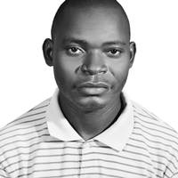

Kevin Cross Minchakpu | WDD 130
Kevin Cross Minchakpu is a Nigerian computer engineer, web developer, and educator based in Nasarawa State. He currently serves as a Computer Analyst and Engineer at the College of Education in Akwanga, where he leads web development training initiatives . Minchakpu is proficient in various technologies, including SQL Server, JavaScript, MySQL, HTML5, C#, Python, and Node.js, and has experience in UX/UI design, project management, and hardware/software troubleshooting. Beyond his academic role, Minchakpu is the founder of Octate Systems, a technology firm that has contributed to digital projects such as the website for the Nasarawa State Ministry of Trade, Industry, and Investment . He is also active on social media, sharing his work and insights on platforms like LinkedIn and X (formerly Twitter). In addition to his technical pursuits, Minchakpu has expressed his creativity through writing, with works like the poem "Falling Into Place" published by Nasarawa Reporters.